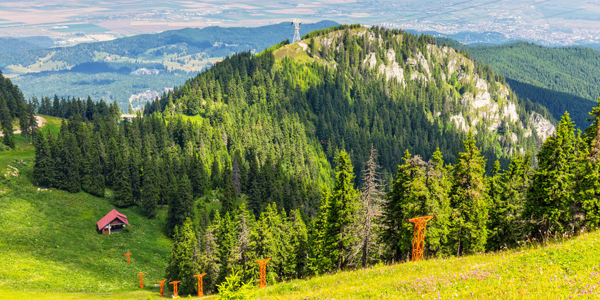
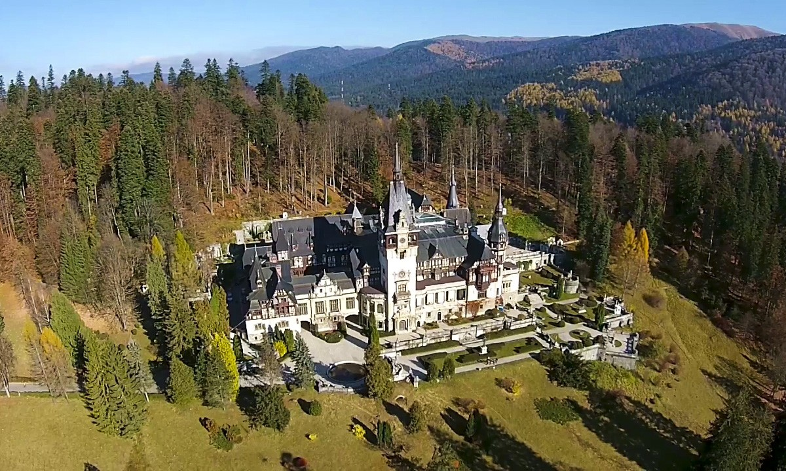

Ce vizităm în România?
Delta Dunării

Este cea mai mare rezervatie de tinuturi umede din Europa si detine cea mai bogata fauna ornitologica din Europa. Iubitorii de natura si aventurierii pot admira o impresionanta flora si fauna. Prin diversitatea impresionanta a habitatelor si a formelor de viata pe care le gazduieste intr-un spatiu relativ restrans. Delta Dunarii constituie un adevarat muzeu al biodiversitatii. vei avea ocazia sa intalnesti la un loc toate speciile vegetal-lacustre ale Europei, ce se reflecta in medii de viata multiple: vegetatia plutitoare submersa, vegetatia riverana ce se formeaza pe marginea inundabila a baltilor si lacurilor, vegetatia de pajisti a grindurilor marine, vegetatia zonelor de saraturi si a zonelor cu apa temporara. Vei vedea un tinut ce reprezinta cel mai important loc de popas pentru pasarile migratoare ce calatoresc intre regiunea tropicala si cea arctica, cinci din cele mai importante drumuri de pasaj trecand pe aici. Multe dintre aceste pasari cu siguranta te vor insoti de-a lungul plimbarilor tale cu barca. In afara de speciile migratoare, aici cuibaresc si un mare numar de specii rare, ca oaspeti de vara, dupa cum altele, oaspeti de iarna, clocesc in nordul Europei si vin sa-si petreaca iarna in Delta. Aici ai ce vizita, Delta Dunarii fiind pe locul doi in Europa ca intindere, dupa delta fluviului Volga, avand aproximativ 4180 Km2 , iar dar daca luam in considerare si complexul lagunar Razim – Sinoie si limanul Dunarii, aceasta suprafata se extinde la aproximativ 5500 Km2. Delta Dunarii apartine intr-un procent de 82% Romaniei, restul fiind localizata pe teritoriul Ucrainei.
Poiana Brașov
Poiana Brasov, frumoasa statiune montana, denumita si “Poiana Soarelui”, este situata la altitudinea de 1030 de metri si la 13 kilometri de Brasov. Statiunea ofera conditii deosebite de agrement tot timpul anului si este vizitata de numerosi turisti. Practicarea sporturilor de iarna se face pe cele 3 partii de coborare si slalom urias, pe partia de slalom special, pe cele 2 trambuline si pe partiile pentru amatori, dotate cu instalatie de zapada artificiala si nocturna. Accesul se face cu 2 telecabine, o telegondola si numeroase teleschiuri. De asemenea aici gasim si terenuri de sport (pentru tenis, minigolf, handbal, baschet), piscine acoperite de inot, centre de fitness, sauna, sali de gimnastica medicala, discoteci, baruri si restaurante etc. Poiana Brasov este recomandata in tratamentul nevrozei astenice, pentru stari de epuizare si surmenaj fizic si intelectual, pentru anemii secundare si boli endocrine, pentru boli ale aparatului respirator. Aerul pur existent aici, puternic ozonat, lipsit de praf si particule care provoaca alergii, presiunea atmosferica relativ scazuta si ionizarea intensa, sunt principalii factorii naturali de cura din aceasta zona
Sinaia
Sinaia este una dintre cele mai frumoase statiuni montane din Romania, situata la o altitudine cuprinsa intre 798 si 1055 m, pe versantul sud-estic al Masivului Bucegi, de-a lungul vaii raului Prahova. Cu un bogat trecut cultural si social Sinaia imbina frumusetea naturii cu cea a artei arhitecturale. Sinaia este una din cele mai importante statiuni de odihna din tara, furnizand cele mai bune conditii de petrecere a timpului liber in toate anotimpurile anului pentru oameni de toate varstele. In ceea ce priveste sporturile de iarna, amatorii au la dispozitie: partii de schi de diferite grade de dificultate, partii de sanius, scoala de schi pentru copii, incepatori si avansati, centre de inchiriere a materialelor si echipamentului pentru schi, mijloace de transport pe cablu: telecabina, telescaun, teleski, babyski. Sinaia este o excelenta poarta de intrare in masivul Bucegi. Astfel, pe timp de vara, excursii de o zi se pot face cu usurinta iar reteaua de trasee marcate ofera varietate pentru toate gusturile. Pentru alpinisti Sinaia ofera o multitudine de trasee de catarare.